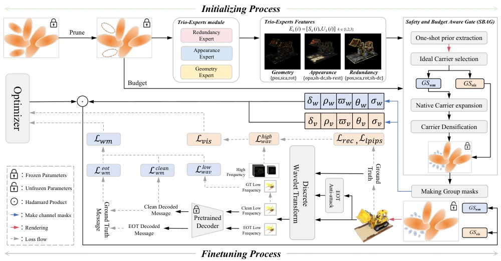
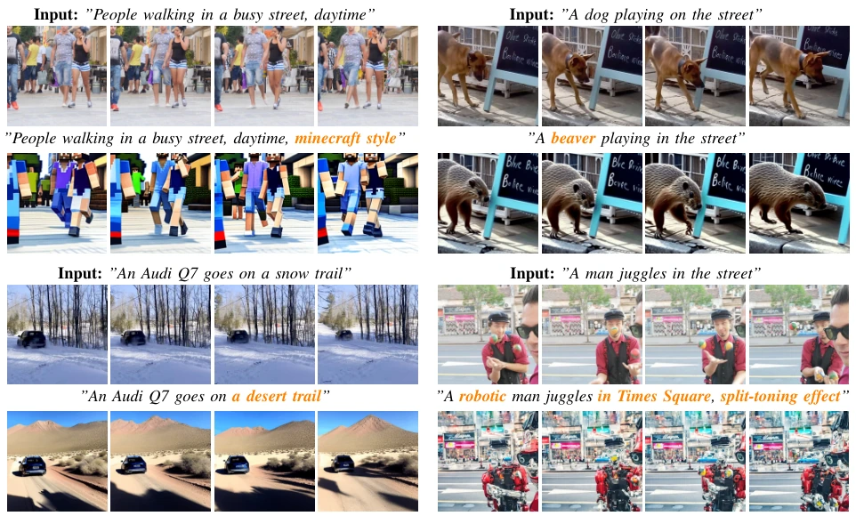
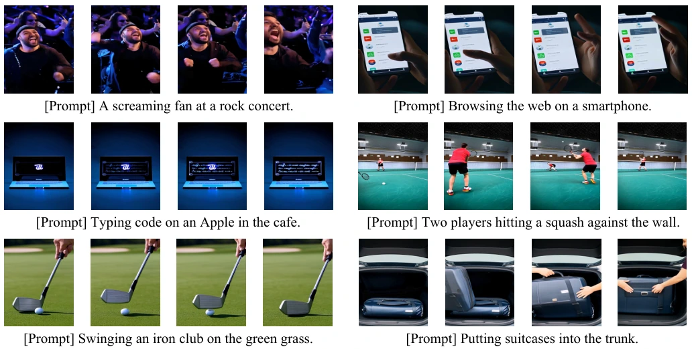
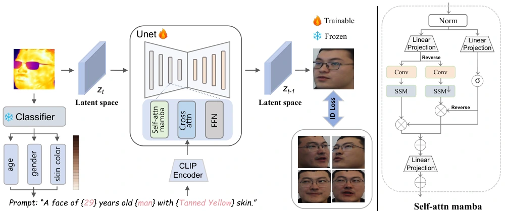
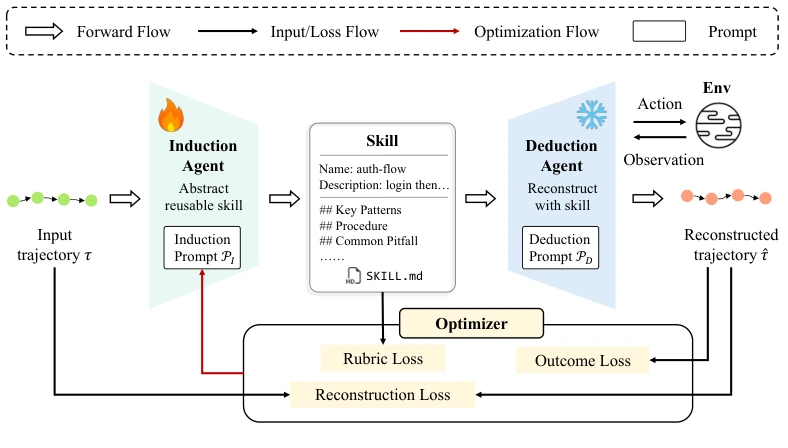
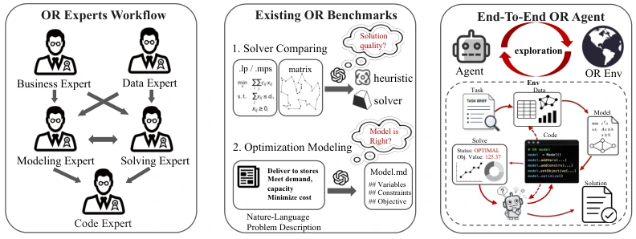

Where, What, Why: Toward Explainable 3D-GS Watermarking
CVPR 20263D vision · Watermarking
Representation-aware carrier selection and decoupled optimization for robust, interpretable 3D watermarks.
I am a PhD student in the Graduate School of Information, Production and Systems at Waseda University, advised by Prof. Osamu Yoshie. My research explores how generative models can produce visually coherent content while following human intent.
I work on video generation and editing, structured semantic control, and watermarking for 3D Gaussian representations. I am particularly interested in temporal consistency, efficient adaptation, and the reliability of visual generative systems.
Previously, I received my master's degree from Waseda University and my bachelor's degree in Software Engineering from Nanjing Forestry University.

Representation-aware carrier selection and decoupled optimization for robust, interpretable 3D watermarks.

Temporal Mamba modeling and low-rank attention bring coherent editing to pretrained image diffusion models.

Structured knowledge graphs resolve prompt ambiguity and guide semantic control across the denoising process.

Attribute-guided latent diffusion translates thermal faces into visible images while preserving identity cues.

Induction and deduction agents learn reusable skills from successful trajectories, with quality checks for reconstruction, outcomes, and documentation.

An execution-based benchmark evaluates how agents formulate, implement, and solve realistic operations research tasks end to end.
PhD student · Information, Production and Systems
Master's degree · Information, Production and Systems
Bachelor's degree · Software Engineering
Digital Human & Video Generation Team